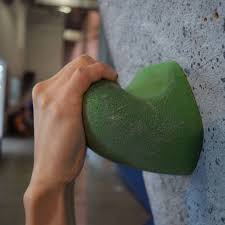
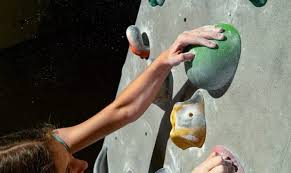
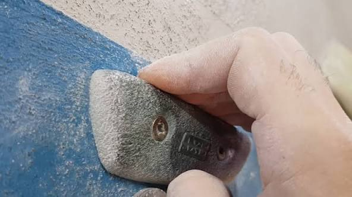
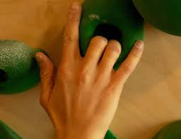
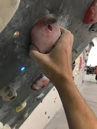
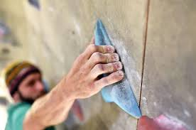
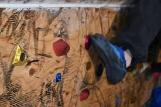

Here is some basic vocabulary and information:
Beta: This means route. It is often used by climbers to strategize how they want to climb up.
Crux: Main problem of the climb, the hardest part.
Send/Flash: To complete a climb fast, usually on the first try.
Project: A climb that you are working on for a while, it may take multiple sessions.
V-scale The rating system for bouldering. It includes beginner, and V0-11+ climbs where a greater number indicates greater difficulty. VB is for first time climbers, V0-2 is for beginners, V3-5 for intermediate climbers, and V6+ for advanced and elite climbers.
Dyno: A move where you have to swing/jump from one hold to another, also called dynamic.
Static: Moving slowly, opposite of dyno or dynamic.
Downclimbing: This is how you get down safely after ascending a climb. There are nice grey, easy holds that you use to downclimb safely. These also have an arrow pointed down printed on them so they are easy to recognize.
Brushing: By brushing sweat and excess chalk accumulated on holds, they become easier to hold onto. Each gym has long brushes that you can use to brush higher holds without difficulty.
| Hold | Description | Level |
|---|---|---|
| Jugs | Large, deep holds that allow for a full-hand grip, ideal for beginners and resting. | All levels |
| Slopers | Smooth, rounded holds with no distinct edge. | V3+ |
| Crimps | Small, thin ledges requiring high finger tension. They are often held with just the first pads of the fingers. | V4+ |
| Pockets | Holes or depressions in the wall that fit one to three fingers. | V3+ |
| Pinches | Holds that must be squeezed, requiring the thumb and fingers to work in opposition. | V3+ |
| Edges | Narrow, flat-faced holds that are more precise than jugs but often larger than crimps. Essentially a hold between the skill of jugs and crimps. | V3+ |
| Chips | Very small, screw-on footholds | V0+ depending on intensity and size. These get much smaller as you progress. |

Jug

Sloper

Crimp


Pinch

Edge

Chip